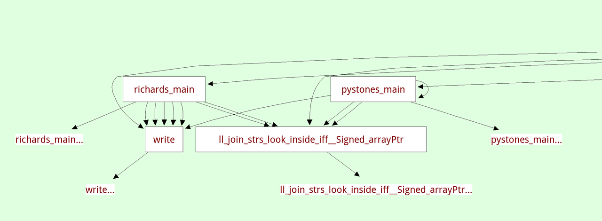

#pypy IRC moves to Libera.Chat
Following the example of many other FOSS projects, the PyPy team has
decided to move its official #pypy IRC channel from Freenode to
Libera.Chat: irc.libera.chat/pypy
The core devs will no longer be present on the Freenode channel, so we recommend to join the new channel as soon as possible.
wikimedia.org has a nice guide on how to setup your client to migrate from Freenode to Libera.Chat.
PyPy v7.3.5: bugfix release of python 2.7 and 3.7
PyPy v7.3.5: release of 2.7 and 3.7
We are releasing a PyPy 7.3.5 with bugfixes for PyPy 7.3.4, released April 4. PyPy 7.3.4 was the first release that runs on windows 64-bit, so that support is still "beta". We are releasing it in the hopes that we can garner momentum for its continued support, but are already aware of some problems, for instance it errors in the NumPy test suite (issue 3462). Please help out with testing the release and reporting successes and failures, financially supporting our ongoing work, and helping us find the source of these problems.
The new windows 64-bit builds improperly named c-extension modules with the same extension as the 32-bit build (issue 3443)
Use the windows-specific
PC/pyconfig.hrather than the posix oneFix the return type for
_Py_HashDoublewhich impacts 64-bit windowsA change to the python 3.7
sysconfig.get_config_var('LIBDIR')was wrong, leading to problems finding libpypy3-c.so for embedded PyPy (issue 3442).Instantiate
distutils.command.installschema for PyPy-specificimplementation_lowerDelay thread-checking logic in greenlets until the thread is actually started (continuation of issue 3441)
-
Four upstream (CPython) security patches were applied:
Fix for json-specialized dicts (issue 3460)
Specialize
ByteBuffer.setslicewhich speeds up binary file reading by a factor of 3When assigning the full slice of a list, evaluate the rhs before clearing the list (issue 3440)
On Python2,
PyUnicode_Containsaccepts bytes as well as unicode.Finish fixing
_sqlite3- untested_reset()was missing an argument (issue 3432)Update the packaged sqlite3 to 3.35.5 on windows. While not a bugfix, this seems like an easy win.
We recommend updating. These fixes are the direct result of end-user bug reports, so please continue reporting issues as they crop up.
You can find links to download the v7.3.5 releases here:
We would like to thank our donors for the continued support of the PyPy project. If PyPy is not quite good enough for your needs, we are available for direct consulting work. If PyPy is helping you out, we would love to hear about it and encourage submissions to our renovated blog site via a pull request to https://github.com/pypy/pypy.org
We would also like to thank our contributors and encourage new people to join the project. PyPy has many layers and we need help with all of them: PyPy and RPython documentation improvements, tweaking popular modules to run on PyPy, or general help with making RPython's JIT even better.
If you are a python library maintainer and use C-extensions, please consider making a CFFI / cppyy version of your library that would be performant on PyPy. In any case both cibuildwheel and the multibuild system support building wheels for PyPy.
What is PyPy?
PyPy is a Python interpreter, a drop-in replacement for CPython 2.7, 3.7, and soon 3.8. It's fast (PyPy and CPython 3.7.4 performance comparison) due to its integrated tracing JIT compiler.
We also welcome developers of other dynamic languages to see what RPython can do for them.
This PyPy release supports:
x86 machines on most common operating systems (Linux 32/64 bits, Mac OS X 64 bits, Windows 32/64 bits, OpenBSD, FreeBSD)
big- and little-endian variants of PPC64 running Linux,
s390x running Linux
64-bit ARM machines running Linux.
PyPy does support ARM 32 bit processors, but does not release binaries.
Some Ways that PyPy uses Graphviz
Some way that PyPy uses Graphviz
Somebody wrote this super cool thread on Twitter about using Graphviz to make software visualize its internal state:
üßµ Make yours and everybody else's lives slightly less terrible by having all your programs print out their internal stuff as pictures; ‚ú® a thread ‚ú® pic.twitter.com/NjQ42bXN2E
— Kate (@thingskatedid) April 24, 2021
PyPy is using this approach a lot too and I collected a few screenshots of that technique on Twitter and I thought it would make a nice blog post too!
The most important view early in the project, and the way that our Graphviz visualizations got started was that we implemented a way to look at the control flow graphs of our RPython functions after type inference. They are in static single information form (SSI), a variant of SSA form. Hovering over the variables shows the inferred types in the footer:
There's another view that shows the inferred call graph of the program:
A related viewer shows the inferred class hierarchy (in this case the exception hierarchy) and you can focus on a single class, which will show you its base classes and all the methods and instance attributes that were found:

We also have a view to show us the traces that are produced by the tracing JIT tests. this viewer doesn't really scale to the big traces that the full Python interpreter produces, but it's really useful during testing:

Then there are more traditional tree views, eg here is a parse tree for a small piece of Python source code:

Parsing-related we have visualized the DFAs of the parser in the past, though the code is unfortunately lost.
All these visualizations are made by walking the relevant data structures and producing a Graphviz input file using a bit of string manipulation, which is quite easy to do. Knowing a bit of Graphviz is a really useful skill, it's super easy to make throwaway visualizations.
For example here is a one-off thing I did when debugging our JSON parser to show the properties of the objects used in a huge example json file:

On top of graphviz, we have a custom tool called the dotviewer, which is written in Python and uses Pygame to give you a zoomable, pannable, searchable way to look at huge Graphviz graphs. All the images in this post are screenshots of that tool. In its simplest form it takes any .dot files as input.
Here's a small video dotviewer, moving around and searching in the json graph. By writing a bit of extra Python code the dotviewer can also be extended to add hyperlinks in the graphs to navigate to different views (for example, we did that for the callgraphs above).
All in all this is a really powerful approach to understand the behaviour of some of code, or when debugging complicated problems and we have gotten a huge amount of mileage out of this over the years. It can be seen as an instance of moldable development ("a way of programming through which you construct custom tools for each problem"). And it's really easy to get into! The Graphviz language is quite a simple text-based language that can be applied to a huge amount of different visualization situations.
PyPy v7.3.4: release of python 2.7 and 3.7
PyPy v7.3.4: release of python 2.7 and 3.7
The PyPy team is proud to release the version 7.3.4 of PyPy, which includes two different interpreters:
PyPy2.7, which is an interpreter supporting the syntax and the features of Python 2.7 including the stdlib for CPython 2.7.18+ (the
+is for backported security updates)PyPy3.7, which is an interpreter supporting the syntax and the features of Python 3.7, including the stdlib for CPython 3.7.10. We no longer refer to this as beta-quality as the last incompatibilities with CPython (in the
remodule) have been fixed.
We are no longer releasing a Python3.6 version, as we focus on updating to Python 3.8. We have begun streaming the advances towards this goal on Saturday evenings European time on https://www.twitch.tv/pypyproject. If Python3.6 is important to you, please reach out as we could offer sponsored longer term support.
The two interpreters are based on much the same codebase, thus the multiple release. This is a micro release, all APIs are compatible with the other 7.3 releases. Highlights of the release include binary Windows 64 support, faster numerical instance fields, and a preliminary HPy backend.
A new contributor (Ondrej Baranovič - thanks!) took us up on the challenge to get windows 64-bit support. The work has been merged and for the first time we are releasing a 64-bit Windows binary package.
The release contains the biggest change to PyPy's implementation of the
instances of user-defined classes in many years. The optimization was
motivated by the report of performance problems running a numerical particle
emulation. We implemented an optimization that stores int and float
instance fields in an unboxed way, as long as these fields are type-stable
(meaning that the same field always stores the same type, using the principle
of type freezing). This gives significant performance improvements on
numerical pure-Python code, and other code where instances store many integers
or floating point numbers.
There were also a number of optimizations for methods around strings and bytes, following user reported performance problems. If you are unhappy with PyPy's performance on some code of yours, please report an issue!
A major new feature is prelminary support for the Universal mode of HPy: a
new way of writing c-extension modules to totally encapsulate PyObject*.
The goal, as laid out in the HPy documentation and recent HPy blog post,
is to enable a migration path
for c-extension authors who wish their code to be performant on alternative
interpreters like GraalPython (written on top of the Java virtual machine),
RustPython, and PyPy. Thanks to Oracle and IBM for sponsoring work on HPy.
Support for the vmprof statistical profiler has been extended to ARM64 via a built-in backend.
Several issues exposed in the 7.3.3 release were fixed. Many of them came from the great work ongoing to ship PyPy-compatible binary packages in conda-forge. A big shout out to them for taking this on.
Development of PyPy takes place on https://foss.heptapod.net/pypy/pypy. We have seen an increase in the number of drive-by contributors who are able to use gitlab + mercurial to create merge requests.
The CFFI backend has been updated to version 1.14.5 and the cppyy backend to 1.14.2. We recommend using CFFI rather than C-extensions to interact with C, and using cppyy for performant wrapping of C++ code for Python.
As always, we strongly recommend updating to the latest versions. Many fixes are the direct result of end-user bug reports, so please continue reporting issues as they crop up.
You can find links to download the v7.3.4 releases here:
We would like to thank our donors for the continued support of the PyPy project. If PyPy is not quite good enough for your needs, we are available for direct consulting work. If PyPy is helping you out, we would love to hear about it and encourage submissions to our renovated blog site via a pull request to https://github.com/pypy/pypy.org
We would also like to thank our contributors and encourage new people to join the project. PyPy has many layers and we need help with all of them: PyPy and RPython documentation improvements, tweaking popular modules to run on PyPy, or general help with making RPython's JIT even better. Since the previous release, we have accepted contributions from 10 new contributors, thanks for pitching in, and welcome to the project!
If you are a python library maintainer and use C-extensions, please consider making a cffi / cppyy version of your library that would be performant on PyPy. In any case both cibuildwheel and the multibuild system support building wheels for PyPy.
What is PyPy?
PyPy is a Python interpreter, a drop-in replacement for CPython 2.7, 3.7, and soon 3.8. It's fast (PyPy and CPython 3.7.4 performance comparison) due to its integrated tracing JIT compiler.
We also welcome developers of other dynamic languages to see what RPython can do for them.
This PyPy release supports:
x86 machines on most common operating systems (Linux 32/64 bits, Mac OS X 64 bits, Windows 32/64 bits, OpenBSD, FreeBSD)
big- and little-endian variants of PPC64 running Linux,
s390x running Linux
64-bit ARM machines running Linux.
PyPy does support ARM 32 bit processors, but does not release binaries.
What else is new?
For more information about the 7.3.4 release, see the full changelog.
Please update, and continue to help us make PyPy better.
Cheers, The PyPy team
New HPy blog
Regular readers of this blog already know about HPy, a project which aims to develop a new C API for Python to make it easier/faster to support C extensions on alternative Python implementations, including PyPy.
The HPy team just published the first post of HPy new blog, so if you are interested in its development, make sure to check it out!
PyPy's blog has moved
For many years, PyPy has been publishing blog posts at https://morepypy.blogspot.com. From now on, the posts will be here, at https://pypy.org/blog. The RSS feed is https://pypy.org/rss.xml. The original content has been migrated to the newer site, including comments.
Mac meets Arm64
Apple now ships Macs which are running on an arm64 variant machine with the latest version of MacOS, Big Sur M1. We are getting requests for PyPy to support this new architecture. Here is our position on this topic (or at least mine, Armin Rigo's), and how you can help.
Porting PyPy is harder than just re-running the compiler, because PyPy contains a few big architecture-dependent "details", like the JIT compiler and the foreign function interfaces (CFFI and ctypes).
Fixing the JIT compiler should not be too much work: we already support arm64, just the Linux one. But Apple made various details different (like the calling conventions). A few other parts need to be fixed too, notably CFFI and ctypes, again because of the calling conventions.
Fixing that would be a reasonable amount of work. I would do it myself for a small amount of money. However, the story doesn't finish here. Obviously, the start of the story would be to get ssh access to a Big Sur M1 machine. (If at this point you're thinking "sure, I can give you ssh access for three months", then please read on.) The next part of the story is that we need a machine available long term. It can be either a machine provided and maintained by a third party, or alternatively a pot of money big enough to support the acquision of a machine and ongoing work of one of us.
If we go with the provided-machine solution: What we need isn't a lot of resources. Our CI requires maybe 10 GB of disk space, and a few hours of CPU per run. It should fit into 8 GB of RAM. We normally do a run every night but we can certainly lower the frequency a bit if that would help. However, we'd ideally like some kind of assurance that you are invested into maintaining the machine for the next 3-5 years (I guess, see below). We had far too many machines that disappeared after a few months.
If we go with the money-supported solution: it's likely that after 3-5 years the whole Mac base will have switched to arm64, we'll drop x86-64 support for Mac, and we'll be back to the situation of the past where there was only one kind of Mac machine to care about. In the meantime, we are looking at 3-5 years of lightweight extra maintenance. We have someone that has said he would do it, but not for free.
If either of these two solutions occurs, we'll still have, I quote, "probably some changes in distutils-type stuff to make python happy", and then some packaging/deployment changes to support the "universal2" architecture, i.e. including both versions inside a single executable (which will not be just an extra switch to clang, because the two versions need a different JIT backend and so must be translated separately).
So, now all the factors are on the table. We won't do the minimal "just the JIT compiler fixes" if we don't have a plan that goes farther. Either we get sufficient money, and maybe support, and then we can do it quickly; or PyPy will just remain not natively available on M1 hardware for the next 3-5 years. We are looking forward to supporting M1, and view resources contributed by the community as a vote of confidence in assuring the future of PyPy on this hardware. Contact us: pypy-dev@python.org, or our private mailing list pypy-z@python.org.
Thanks for reading!
Armin Rigo
PyPy 7.3.3 triple release: python 3.7, 3.6, and 2.7
 The PyPy team is proud to release the version 7.3.3 of PyPy, which includes three different interpreters:
- PyPy2.7, which is an interpreter supporting the syntax and the features of Python 2.7 including the stdlib for CPython 2.7.18 (updated from the previous version)
- PyPy3.6: which is an interpreter supporting the syntax and the features of Python 3.6, including the stdlib for CPython 3.6.12 (updated from the previous version).
- PyPy3.7 beta: which is our second release of an interpreter supporting the syntax and the features of Python 3.7, including the stdlib for CPython 3.7.9. We call this beta quality software, there may be issues about compatibility with new and changed features in CPython 3.7. Please let us know what is broken or missing. We have not implemented the documented changes in the
remodule, and a few other pieces are also missing. For more information, see the PyPy 3.7 wiki page
The interpreters are based on much the same codebase, thus the multiple release. This is a micro release, all APIs are compatible with the 7.3 releases, but read on to find out what is new.
Several issues found in the 7.3.2 release were fixed. Many of them came from the great work by conda-forge to ship PyPy binary packages. A big shout out to them for taking this on.
Development of PyPy has moved to https://foss.heptapod.net/pypy/pypy. This was covered more extensively in this blog post. We have seen an increase in the number of drive-by contributors who are able to use gitlab + mercurial to create merge requests.
The CFFI backend has been updated to version 1.14.3. We recommend using CFFI rather than c-extensions to interact with C, and using cppyy for performant wrapping of C++ code for Python.
A new contributor took us up on the challenge to get windows 64-bit support.
The work is proceeding on the win64 branch, more help in coding or
sponsorship is welcome. In anticipation of merging this large change, we fixed
many test failures on windows.
As always, this release fixed several issues and bugs. We strongly recommend updating. Many of the fixes are the direct result of end-user bug reports, so please continue reporting issues as they crop up.
You can find links to download the v7.3.3 releases here:
We would like to thank our donors for the continued support of the PyPy project. If PyPy is not quite good enough for your needs, we are available for direct consulting work.
We would also like to thank our contributors and encourage new people to join the project. PyPy has many layers and we need help with all of them: PyPy and RPython documentation improvements, tweaking popular modules to run on pypy, or general help with making RPython’s JIT even better. Since the previous release, we have accepted contributions from 2 new contributors, thanks for pitching in.
If you are a python library maintainer and use c-extensions, please consider making a cffi / cppyy version of your library that would be performant on PyPy. In any case both cibuildwheel and the multibuild system support building wheels for PyPy.
What is PyPy?
PyPy is a Python interpreter, a drop-in replacement for CPython 2.7, 3.6, and 3.7. It’s fast (PyPy and CPython 3.7.4 performance comparison) due to its integrated tracing JIT compiler.
We also welcome developers of other dynamic languages to see what RPython can do for them.
This PyPy release supports:
- x86 machines on most common operating systems (Linux 32/64 bits, Mac OS X 64 bits, Windows 32 bits, OpenBSD, FreeBSD)
- big- and little-endian variants of PPC64 running Linux,
- s390x running Linux
- 64-bit ARM machines running Linux.
PyPy does support ARM 32 bit processors, but does not release binaries.
 
What else is new?
For more information about the 7.3.3 release, see the full changelog.Please update, and continue to help us make PyPy better.
Cheers,
The PyPy team
 
PyPy 7.3.2 triple release: python 2.7, 3.6, and 3.7
 
- PyPy2.7, which is an interpreter supporting the syntax and the features of Python 2.7 including the stdlib for CPython 2.7.13
- PyPy3.6: which is an interpreter supporting the syntax and the features of Python 3.6, including the stdlib for CPython 3.6.9.
- PyPy3.7 alpha: which is our first release of an interpreter supporting the
syntax and the features of Python 3.7, including the stdlib for CPython
3.7.9. We call this an alpha release since it is our first. It is based off PyPy 3.6 so
issues should be around compatibility and not stability. Please try it out
and let us know what is broken or missing. We have not implemented some of the
documented changes in the
remodule, and other pieces are also missing. For more information, see the PyPy 3.7 wiki page
The interpreters are based on much the same codebase, thus the multiple release. This is a micro release, all APIs are compatible with the 7.3.0 (Dec 2019) and 7.3.1 (April 2020) releases, but read on to find out what is new.
Conda Forge now supports PyPy as a python interpreter. The support is quite complete for linux and macOS. This is the result of a lot of hard work and good will on the part of the Conda Forge team. A big shout out to them for taking this on.
Development of PyPy has transitioning to https://foss.heptapod.net/pypy/pypy. This move was covered more extensively in this blog post. We have seen an increase in the number of drive-by contributors who are able to use gitlab + mercurial to create merge requests.
The CFFI backend has been updated to version 1.14.2. We recommend using CFFI rather than c-extensions to interact with C, and using cppyy for performant wrapping of C++ code for Python.
NumPy has begun shipping wheels on PyPI for PyPy, currently for linux 64-bit
only. Wheels for PyPy windows will be available from the next NumPy release. Thanks to NumPy for their support.
A new contributor took us up on the challenge to get windows 64-bit support.
The work is proceeding on the win64 branch, more help in coding or
sponsorship is welcome.
As always, this release fixed several issues and bugs. We strongly recommend updating. Many of the fixes are the direct result of end-user bug reports, so please continue reporting issues as they crop up.
You can find links to download the v7.3.2 releases here:
We would like to thank our donors for the continued support of the PyPy
project. Please help support us at Open Collective. If PyPy is not yet good enough for your needs, we are available for
direct consulting work.
We would also like to thank our contributors and encourage new people to join the project. PyPy has many layers and we need help with all of them: PyPy and RPython documentation improvements, tweaking popular modules to run on pypy, or general help with making RPython’s JIT even better. Since the previous release, we have accepted contributions from 8 new contributors, thanks for pitching in.
If you are a python library maintainer and use c-extensions, please consider making a cffi / cppyy version of your library that would be performant on PyPy. In any case both cibuildwheel and the multibuild system support building wheels for PyPy.
What is PyPy?
PyPy is a very compliant Python interpreter, almost a drop-in replacement for CPython 2.7, 3.6, and 3.7. It’s fast (PyPy and CPython 2.7.x performance comparison) due to its integrated tracing JIT compiler.
We also welcome developers of other dynamic languages to see what RPython can do for them.
This PyPy release supports:
- x86 machines on most common operating systems (Linux 32/64 bits, Mac OS X 64 bits, Windows 32 bits, OpenBSD, FreeBSD)
- big- and little-endian variants of PPC64 running Linux,
- s390x running Linux
- 64-bit ARM machines running Linux.
PyPy does support ARM 32 bit processors, but does not release binaries.
What else is new?
For more information about the 7.3.2 release, see the full changelog.Please update, and continue to help us make PyPy better.
Cheers,
The PyPy team
 
 
The SHA256 checksum for pypy3.6-v7.3.2-aarch64.tar.bz2 is one character too short on the https://www.pypy.org/download.html. Was it accidentally truncated during a copy/paste?
Concerning sponsorship for the win64 branch, I am in no position to sponsor the entire thing but I would happily give a few euros if you opened a specific fund raiser for that. Note that the donation link (on the blog) is currently broken.
PyPy is on Open Collective
Hi all,
PyPy is now a member of Open Collective, a fiscal host. We have been thinking about switching to this organization for a couple of years; we like it for various reasons, like the budget transparency and the lightweight touch. We can now officially announce our membership!
With this, we are now again free to use PyPy for all financial issues, like receiving funds professionally, paying parts of sprint budgets as we like, and so on. We will shortly be reintroducing buttons that link to Open Collective from the PyPy web site.
Although the old donation buttons were removed last year, we believe that there are still a few people that send regularly money to the SFC, the not-for-profit charity we were affiliated with. If you do, please stop doing it now (and, if you like to do so, please set up an equivalent donation to PyPy on Open Collective).
And by the way, sorry for all of you who were getting mixed feelings from the previous blog post (co-written with the SFC). PyPy is committed to continue being Open Source just like before. This was never in question. What these two blog posts mean is only that we switched to a different organization for our internal finances.
We're looking forward to how this new relationship will go!
Armin Rigo, for the PyPy team
if you post a crowdsourcing link (e.g. gofundme, etc) I'd be happy to contribute, and now that it's hit the front page of HN, I'm sure lots of other people would join. M1 macs are pretty inexpensive.
p.s. thanks!!! for all the work - I use pypy regularly.
I have an M1 MacBook Air that I could give you SSH access to but it will come to me in mid January.
ditto on the crowdsource
You can contribute to PyPy on their Open Collective page:
https://opencollective.com/pypy
done.
M1 Macs for CI are available for free for open source developers. See: https://www.macstadium.com/opensource
@Anonymous: like many others, MacStadium is conflating "open source" with "hobbyist" by adding this clause: "Open source project may not (...)receive funding from commercial companies or organizations (NGO, education, research or governmental). (...) Contributors who are paid to work on the project are not eligible." The point of my blog post was precisely that I won't do it for free.
It seems like it might be worth reaching out to MacStadium about it regardless. They've got Golang, Rust, Node, NumFocus, and Monero listed on their support page https://www.macstadium.com/opensource-members which suggests to me that this language might just be a hamfistedly awkward attempt to avoid somebody at Facebook trying to get a free fleet of mac minis out of open sourcing their SDK or something.